Configure NAO¶
Follow the step by step Getting started wizard to configure your robot.
NAO - Getting started wizard¶
Language and software agreement¶
| Step | Action |
|---|---|
Choose the language. 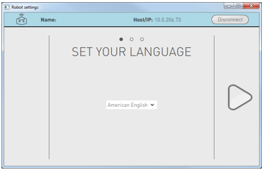Click the next button. |
|
Check and validate the 2 conditions of the End-user Software License Agreement. 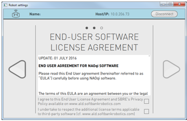Click the next button. |
Setting WiFi connection¶
Specific cases
| If you ... | See ... |
|---|---|
| must use a hidden network | WiFi connection to a hidden network |
| need to configure the MAC address filtering of your WiFi access point | MAC Addresses |
Otherwise, follow the process below:
| Step | Action |
|---|---|
Select one of the available WiFi networks. For further details, see: Why setting a WiFi connection. 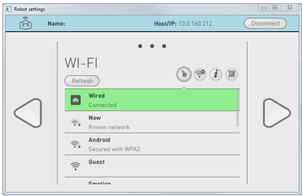Note: choose a Wifi network having one of the Supported personal securities. |
|
Complete the required parameters. 
|
|
Click the Connect button. Once the WiFi is connected, a yellow star is displayed. 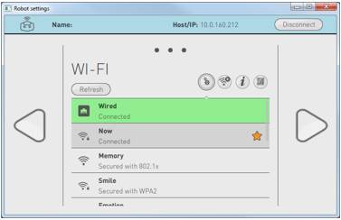Tips: Do not remove the cable yet: the wizard requires the Ethernet connection. Click the next button. |
Customization steps¶
According to the presetting of your NAO, the following setting may appears:
TimeZone¶
Choose a time zone. 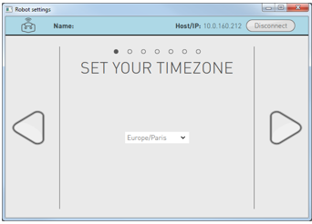Then click the next button. |
Password¶
Define a password to secure remote access to your NAO. 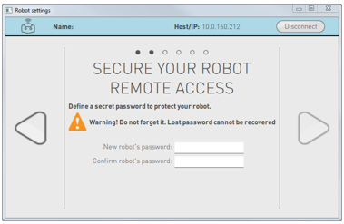Warning Keep the password! Robot’s password is mandatory to connect a computer to NAO. Then click the next button. |
Robot’s name¶
Customize the name of your NAO. This is useful if you have more than one NAO. 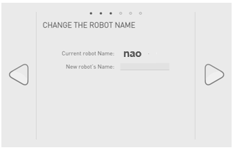Then click the next button. |
SoftBank Robotics Community user account¶
Enter the login and password of your SoftBank Robotics user Community Account. 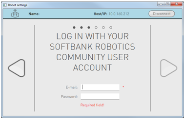Then click the next button. 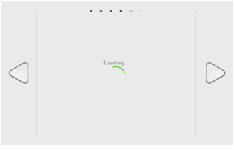The connection to your SoftBank Robotics user Community Account is tested. You will henceforth be able to retrieve applications and services from the NAO Apps Store. |
Diagnostic & improvement¶
Check and validate the automatic diagnostic report. 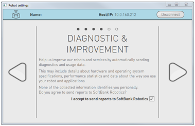Then click the next button. |
System upgrade¶
| Step | Action |
|---|---|
Click the Update now button. 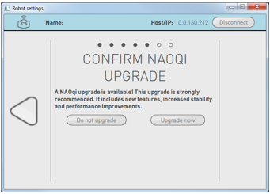 |
|
If necessary, messages guides you in order to make sure the battery charger is plugged. 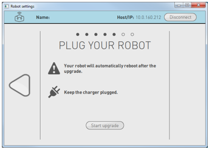 |
|
Click the Start update button. 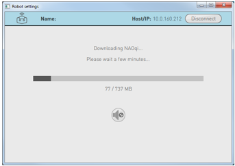 |
Application update¶
Click the Update all button. 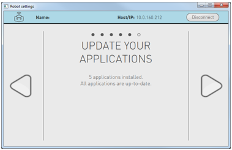Then click the next button. |
Final steps¶
The configuration is completed when the screen below appears:
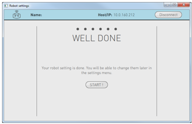| Step | Action |
|---|---|
Click the Start! button. The Robot Settings now displays the basic settings. 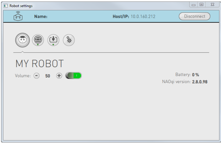 |
|
You can now remove the Ethernet cable and put back the hatch behind the head of the robot. Tip: as a consequence, Robot Settings has lost the connection, ask again to NAO his IP Address and reconnect Robot Settings. |
|
It’s time to interact with NAO. For further details see: Interacting with NAO. |